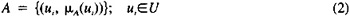

by Abraham Kandel
CRC Press, CRC Press LLC
ISBN: 084934297x Pub Date: 11/01/91
|
|
Fuzzy Expert Systems
by Abraham Kandel CRC Press, CRC Press LLC ISBN: 084934297x Pub Date: 11/01/91 |
| Previous | Table of Contents | Next |
The rules supplied by a human expert are conditional statements normally expressed as if-then rules. A rule is also regarded as an ordered pair of symbol strings, with a left-hand side (LHS) and a right-hand side (RHS), respectively. LHS and RHS are regarded as a situation recognition part (antecedent) and an action part (conclusion), respectively. The situation part expresses some condition on the state of the data base and whether it is satisfied at any given point. The action part specifies changes to be made to the data base whenever the rule is satisfied. The inference engine is an interpreter of the rule base. Its task is to monitor the facts in the data base and execute the action part (RHS) of those rules that have their situation part (LHS) satisfied. The interpreter operates by scanning the LHS of each rule until one is found that can be successfully matched against the data base. If no LHS rules are true, then no action is taken. Therefore, a set of rules has to cover all possible combinations of situations, otherwise, the interpreter cannot take any action. In most cases it is very difficult or infeasible to form an exhaustive search for all possible situations. Thus, in CATS, a fuzzy logic technique is employed to avoid such deadlock. Since an inference mechanism based on fuzzy set theory is basically generalized multiple-valued logic, some action is always suggested through fuzzy inference even though there are no exactly matched conditions in a LHS of a rule.
One application of expert systems is the rule-based process controller.6,8,9 A usual approach for automatic process control is to establish a mathematical model of the process. In some cases, there is no proper mathematical model because the process is too complex or poorly understood. In other cases, experimenting with plants for construction of mathematical models is too expensive. For such processes, however, skilled human controllers may be able to operate the plant satisfactorily. The operators are quite often able to express their operating practice in the form of rules which may be used in a rule-based controller. The rule-based controllers model the behavior of the expert human operator instead of the process. The following is a rule from a cement kiln controller.9
As indicated by terms O.K., low, and slightly, rules in expert systems may contain propositions with imprecise expressions. They can be represented by using fuzzy membership functions.
This is the reason why we employ fuzzy logic which can deal with the expert knowledge as a distribution of belief. In the following sections, we discuss how to process vague information and how to make inference.
For the convenience of the reader, a brief summary of some of the relevant aspects of the theory of fuzzy sets and the linguistic approach is presented in this section. For more detail, see Reference 14.
The symbol U denotes a universe of discourse, which may be an arbitrary collection of subjects or mathematical constructs. If A is a finite subset of U whose elements are u1, … ,un, A is expressed as
Figure 3 Various linguistic values are expressed by fuzzy sets.
A finite fuzzy subset A of U is a set of ordered pairs:

where the μA (ui) represent grades of membership (or membership functions), which indicate the degree of membership. If all μA (ui) ∈ {0,1}, the “fuzzy subset” will be understood as a “nonfuzzy subset” or “ordinary subset”. The functions μA (ui) are then binary Boolean functions. However, unless stated to the contrary, the μA (u) are assumed to lie in the interval [0,1], with 0 and 1 denoting no membership and full membership, respectively.
We will use fuzzy subsets to represent linguistic variables. Informally, a linguistic variable, L, is a variable whose values are words or sentences in a natural language or in a subset of it. If age is interpreted as a linguistic variable, then its term-set T(age) might be
where each of the terms in T(age) is expressed by a fuzzy subset of a universe of discourse, i.e., U = [0,100]. For example, given the sets young and old in T(age), one can construct other sets, such as very young, more less young, and not very young as shown in Figure 3.
In classical propositional calculus, the expression if A then B, where A and B are propositional variables, is written as A → B, with → regarded as a connective which is defined by:
where means the complement of A.
A more general concept, which plays an important role in our approach, is the fuzzy conditional statement: if A then B, or i short, A → B, in which A (the antecedent) and B (the conclusion) are fuzzy subsets rather than propositional variables. A relation R from A to B is a fuzzy subset of the Cartesian product U × V, where A ∈ U and B ∈ V. The conditional statement “if X is A then Y is B” is represented by the fuzzy relation R and defined as follows:
Note that there are many ways to define a fuzzy relation. Here we introduce the most commonly used one.
If R is a fuzzy relation from U to V, and x is a fuzzy subset of U, then the fuzzy subset y of V which is induced by x is denoted by:

and defined as follows:
Note that when R = A → B and x = A we obtain:
as an exact identity. Thus, Equation 6 may be viewed as an extension of modus ponens.
| Previous | Table of Contents | Next |
){kind=link}